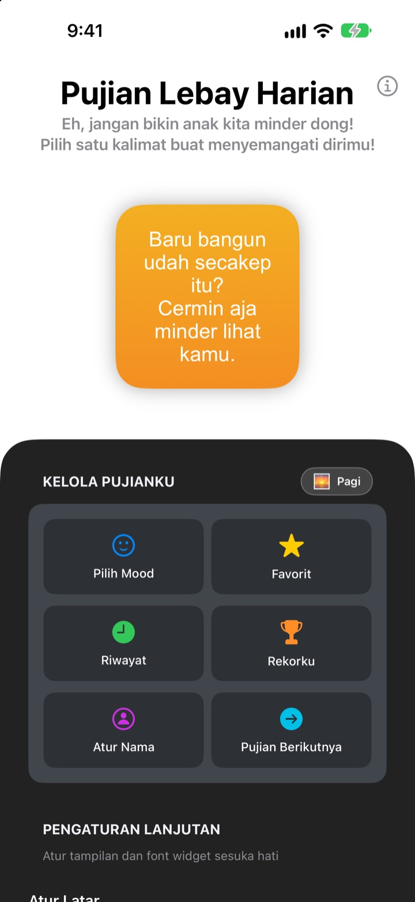
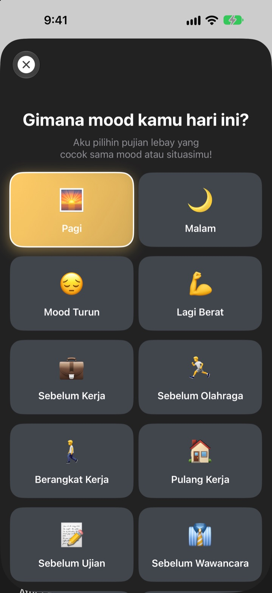
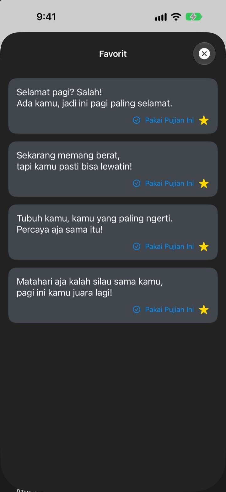
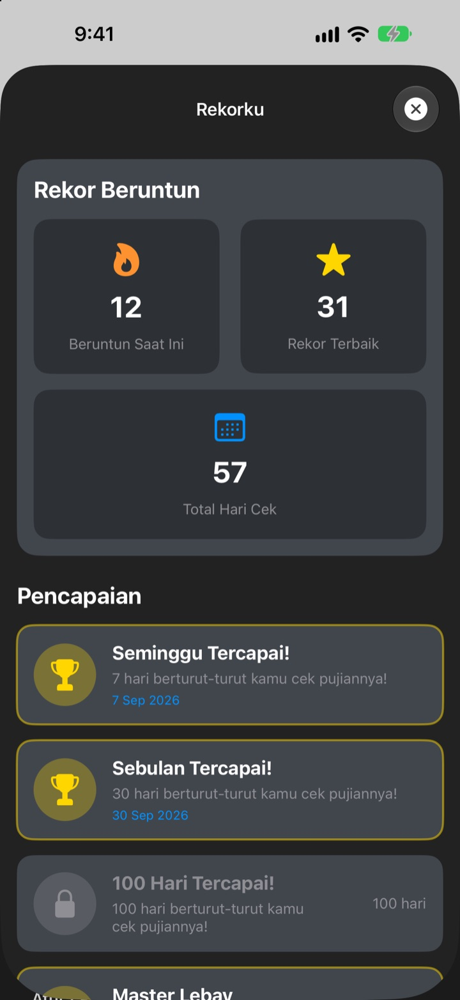

Tiap kali buka HP,
fans beratmu sudah menunggu
Pujian Lebay Harian adalah widget yang sengaja memujimu kelewatan. Pagi-pagi dapat pujian pagi, sebelum wawancara dapat pujian wawancara. Font, warna, dan latarnya bisa kamu atur sesukamu.
Sekali beli, semua fitur terbuka. Tanpa langganan, tanpa iklan.

Dapatkan satu pujian sekarang
Pilih mood, dan widget menampilkan pujian untuk mood itu. Ketuk Pujian Berikutnya untuk mengacak satu dari 281 pujian.
Siapa pengkritik paling keras buatmu? Jangan-jangan kamu sendiri
Di jalan berangkat kerja, sebelum wawancara, saat pulang, suara di kepala isinya omelan melulu. Pujian Lebay Harian membelamu dari Layar Utama beberapa kali sehari, sedikit kelewat batas. Begitu kamu senyum-senyum sendiri, rasa percaya diri pun balik sedikit.
Pujian yang pas dengan mood-mu
Pilih dari 14 mood dan situasi seperti Pagi, Berangkat Kerja, Lagi Berat, Sebelum Wawancara, atau Sebelum Kencan, dan pujian yang cocok langsung muncul di widget. Bingung? Ada Acak juga.

Simpan yang kamu suka
Ketuk bintang untuk menyimpannya di Favorit, lalu lihat lagi yang sebelumnya di Riwayat. Ketuk Pakai Pujian Ini dan langsung pindah ke widget.

Mampir tiap hari, rekornya terus naik
Setiap hari kamu mampir, rekor beruntunmu bertambah. Capai 7, 30, atau 100 hari berturut-turut, atau total 50 dan 100 hari, dan pencapaian pun terbuka.

Mulai dalam tiga langkah
- 1
Pilih mood
Buka
Pilih Mooddan ketuk yang pas dengan saat ini. - 2
Hias widget
Di Pengaturan Lanjutan, pilih font, warna teks, latar, dan interval refresh.
- 3
Pasang di Layar Utama
Tekan lama Layar Utama, ketuk +, lalu cari Pujian Lebay Harian.
Atur widget sesukamu
- Font
- 13 pilihan, termasuk Futura, Georgia, dan Marker Felt
- Warna Teks
- Warna apa saja yang kamu suka
- Latar
- Gradasi dua warna, atau salah satu foto bawaan
- Perataan
- Kiri, tengah, atau kanan
- Jarak Baris
- Lebih rapat atau lebih longgar
- Interval Refresh
- Pujian baru tiap 5, 15, atau 30 menit
Ukuran widget dipilih saat kamu menambahkannya ke Layar Utama.
Sekali beli, beres
Aplikasinya
- 281 pujian untuk 14 mood
- Widget Layar Utama yang bisa dihias
- Favorit dan Riwayat
- Rekor beruntun dan pencapaian
Dukung pengembang
- Pilih tip kecil, sedang, atau besar
- Tidak membuka fitur apa pun. Hanya cara untuk berterima kasih
Hanya kalau dan kapan kamu mau.
Tanpa langganan, tanpa pembelian tambahan, tanpa iklan.
Pertanyaan umum
Bagaimana cara menambah widget?
Tekan lama area kosong di Layar Utama sampai ikonnya bergoyang, ketuk + di atas, cari Pujian Lebay Harian, lalu pilih ukurannya.
Bagaimana pujian berikutnya dipilih?
Saat kamu memilih mood, pujian untuk mood itu langsung muncul di widget. Setelah itu, widget menampilkan pujian acak dari 281 pujian sesuai interval refresh pilihanmu. Di aplikasi, kamu juga bisa ketuk Pujian Berikutnya untuk ganti sendiri.
Bisakah ganti font atau interval refresh?
Bisa. Di Pengaturan Lanjutan kamu bisa ganti font, warna teks, latar, perataan, jarak baris, dan interval refresh: 5, 15, atau 30 menit.
Widget-nya tidak langsung berubah.
iOS yang menentukan kapan widget digambar ulang, jadi kadang sedikit telat dari interval yang kamu pilih. Buka aplikasinya lalu tutup lagi, widget akan langsung diperbarui.
Bagaimana rekor beruntun dihitung?
Tiap hari berturut-turut kamu melihat pujian, rekormu bertambah satu. Di Rekorku kamu bisa lihat rekor saat ini, rekor terbaik, total hari, dan pencapaian.
Favorit dan riwayatku hilang.
Semua data hanya tersimpan di perangkatmu, jadi tidak ikut pindah kalau aplikasinya dihapus atau ganti HP. Kalau tidak dihapus tapi tetap hilang, kabari kami lewat email.
Apakah dataku dikirim ke mana-mana?
Tidak. Aplikasi ini tidak mengumpulkan data pribadi. Favorit dan riwayatmu tetap di perangkatmu.
Bagaimana melaporkan bug atau memberi usulan?
Langsung lewat Hubungi Developer di aplikasi, lewat email, atau DM Instagram @lee25_ios. Kami balas begitu sudah melihatnya.
Ada pertanyaan atau masukan? Kirim ke leeo@kakao.com.